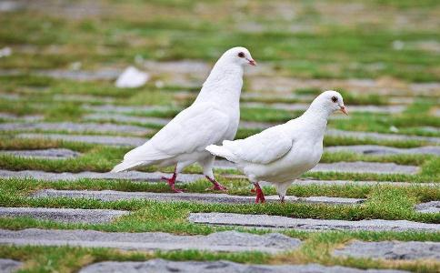

每当我看到晨曦的都市上空掠过的鸽群，自由
故事发生在90年代初，那时我去上班总要
某天，又在早点铺遇到了孩子父亲，父亲看着像有话要说，犹豫了下，对我说了这样一个奇怪的事。前一阵子他家飞来了一只陌生的鸽子，这只鸽子是灰色的羽毛，不是他家所养的白鸽，落到他的鸽棚前讨水喝，也很饿，撒了把
虽然我不懂鸽子，但还是怀着浓厚的兴趣下班去了他家瞧瞧，到了阳台才发现他可真是鸽子迷，鸽棚里十几只鸽子，喂食的器具，消毒用品，药，杂粮。此时那只灰色鸽子又出现了，早已站在鸽棚上等着他的到来，我们不禁心中称奇，但是怎么呼唤也不飞下来。
这时东东和妈妈正巧从外地姥姥家回来，一进屋，东东就兴奋的跑了过来，冲鸽子招手，鸽子竟然奇迹般的飞到他跟前很是亲热。而这时我也注意到了鸽子羽毛和爪子上的沾染的红色染料，很像是血痕呢，但鸽子又似乎很
拿到了棉签，我立刻回到了警局，马上送到了化验室分析。结果出来了，确实是血迹，但不是鸽子的，而是人的。这也印证了我的担忧。
转天再一次到那个父亲家里，我向东东询问起这只鸽子的来历，东东告诉了我这样的事情，这只鸽子是属于一个老爷爷的。原来一个多月前，他和爸爸给家里的白鸽子路训，把家里这群鸽子送到了杨柳青放飞，然后家里等鸽子陆续飞了回来，但东东发现鸽群里多了这样一只灰色的鸽子，很是开心，便给它撒了点吃的，这只鸽子和这个小孩就这样熟悉起来，隔三差五的飞到他家阳台上来。
爸爸以为是野鸽子也没在意，但东东却十分喜欢它，这只灰色鸽子偶尔还能带来几只同伴。过几天东东发现有只鸽子上面的脚环上插了小纸条，上面写着感谢给鸽子喂食照料的话，东东很兴奋，便又回了个小纸条。这样一来二去，鸽子不定期的传递着两家养鸽人的信息，东东得知这群灰色的鸽子是一个老爷爷所养的，在鸽子信使的帮助交流中，和这个未谋面的老爷爷建立了简单的友谊。
听到东东说了这些，孩子的父亲和我恍然大悟，那么现在最迫切的是，这只灰鸽子为什么会沾染到人的血迹，而这个养鸽子的老爷爷又在哪里？我耐心的坐在沙发上等待着那个特殊的朋友到来。
一小时后，听到远处传来鸽子拍动翅膀的声音，跑到阳台，令人吃惊，此时一群灰色的鸽子从远处飞来，盘旋在楼顶。东东一招手，灰鸽子像见到了老朋友一样，飞到了鸽棚上来，这十来只灰鸽子兴奋的叫着，东东爸爸看得有些吃惊，一下子飞来这么多鸽子，家里鸽棚中的白色的鸽子也跟着咕咕的叫着。赶紧拿来饲料，一小盆水，这群灰鸽子似乎很久没进食了，争先恐后的吃起来。
我立刻喊东东父亲拿一副望远镜来，三步并作两步，跑上了楼顶，这群可爱的鸽子吃饱喝足后，嬉戏了一会，腾空飞起。我拿着望远镜目光跟随着这群鸽子，鸽子盘绕一圈，绕过了头顶，飞过了一片楼房，糟糕，视线被楼群挡住了，鸽子消失在楼群后。
转天，我召集了十来位同事，告诉他们：下午咱们散散心，去观赏鸽子。并让他们带上步话机，望远镜。同事们大惑不解这么兴师动众的看鸽子干什么？但拗不过我，便几个骑着自行车，开了两辆车，和我一起出发了。我再三嘱咐他们，一定要帮我看好这群鸽子落在什么地方。
我让三个同事带着望远镜，先爬上了东东家附近3个视野开阔的大楼楼顶，然后我和一个同事开着车在东东家楼下等候，剩下几名同事分布在附近的街道上。
没过一会，一群灰色鸽子赴约般的飞进了视野里，在楼顶上盘旋了一圈，相继落在了东东家阳台上。而东东也按照我的授意，趁给它们喂食机会，选了三只强壮的灰鸽子，套上了哨子。鸽子们吃饱了，开始要飞走了，我紧张起来，立刻呼叫各观察点注意，密切跟踪鸽群去向。
鸽群在几只头鸽的带领下编队飞行，哨子发出清脆的响声，觅着哨子声音，跳上车跟着鸽子方向开去，刚转过街角，鸽子从楼群后消失。马上联系楼顶同事，同事报告鸽群向南京路方向飞去，赶紧拐入河北路冲向南京路，闯过红灯，又发现了鸽子踪影，继续跟踪，展开了人追鸽大战。我心理暗暗琢磨，小家伙，可别把我甩掉啊，我可全都靠你们了。
鸽群带着清脆的哨音自由欢快的掠过城市上空，这时又再次失去目标，马上联系各个观察点，有没有看到鸽群去向。沉寂了半天，一个同事兴奋的回话喊道，河西区尖山路方向看到鸽子群了，车子冲刺般再次开动，疯狂的直奔过去，只是为了一群鸽子和不知道所以然的原因。到了平江道附近，终于又听到了那悦耳的哨音，这群可爱的鸽子在一片楼上盘旋着，停下车来。鸽子纷纷落到了一户阳台上，总算被我找到了。
迅速停车跑上了楼，敲敲该户房门，没用动静，把邻居叫出来询问该住屋住着谁。邻居告诉我，是个独居的老大爷，以前因工伤而回了家，老伴早没了，没见过有子女，白天靠收点废品，晚上给停车场看夜为生。很平常普通的老头，没什么反常的，就是爱养鸽子，好像钱都花在鸽子上了，也没有什么朋友来往。虽然养鸽子有点脏巴，但老头很勤快，每天早起把附近的鸽子粪都擦干净了，邻居虽然有点不太愿意，但一看这样也不好说他什么，慢慢的也都能接受了。再一打听，老头子好些天没进出过了。
我们撞开门进去，发现窗户敞开着，屋子里摆放着陈旧的家具，一个老人倒在了屋里，身边流淌了一摊血，早已没有了声息。老人那群心爱的鸽子飞进了屋里，围绕在老人身旁攒动着，默默地注视着这些，咕咕的叫着，似乎是要叫醒主人，这群不能言语的朋友，在等待着老人再次如往常般给它们喂食。
检查现场发现，老人死于致命的胸部锐器刺伤，老人倒地时并没有立刻死亡，而是向阳台的鸽笼方向艰难的爬行了一米，最后慢慢的停止了呼吸。同事们默不做声，摘下了警帽。
再次对现场彻底检查，屋内有翻动痕迹，同时发现了一枚可疑指纹，我需要更多的线索。仔细察看鸽子笼，看得出老人很勤快，打扫得很仔细，也经常消毒，只堆积了这几天未清理的鸽子粪便，但在一块粪便上沾着什么东西，我用镊子轻轻夹起一根羽毛，这根羽毛细小，放大镜仔细分辨，这不是鸽子羽毛，也不属于这里。这根看似微不足道的羽毛，又不同寻常，看样子像羽绒服里的填充物。
来到楼下，我询问邻居，这楼附近有个穿羽绒服的男子吗？大娘告诉我，据她所知有两个人，一个是教师在楼上，另一个是外地打工的，在斜对面楼租住。听到这些，我闪身进存车棚里，注视着该楼洞口，耐心的等候那个打工小伙子回来。
一个穿了劣质羽绒服的小伙子出现在我视线里，从背后观望，羽绒服缝隙里渗透出羽毛来沾在衣服上。从后面走近他，闻到了一股消毒液味。我还未采取行动，一个意想不到的情况出现了，几只灰色的鸽子不知道从哪飞过来，在他身边盘旋大声地叫着，小伙子咒骂着：又来烦我，该死的鸽子，滚开！他猛然回头，发现身后穿着警服的我，脸色刷的一下就白了。我对他说：天天被鸽子追赶着，你能睡好么？
凭借指纹对比，打工小伙子最后招供了，他觉得老人省吃俭用应该很有钱，骗开了房门，对老人谋财害命。他在等待审判前对我说过这么一句：天天听鸽子叫声已经快崩溃了，进了监狱才算真正的
再次在早点铺碰到了东东父亲，父亲告诉我说，那群灰色鸽子后来到他们家安家落户了，和东东非常的亲，儿子很认真的照料它们，训练它们。东东希望能继续把老爷爷的鸽子喂养好，训练好，让它们参加信鸽比赛，想让它们拿到最好的名次。但我也劝过他，这品种的鸽子和那几万元一只的名贵血统鸽子没法比啊，但他依然跑得很远去放飞训练它们。
后来我给东东打电话，询问他那些鸽子比赛的情况，东东在电话那边抽泣起来说：这些鸽子飞的不好，只拿到了十几名，是我没有教好它们。我只是希望它们能飞得更好些。
我明白单纯的东东用意，我告诉他：它们已经是最好的鸽子了，真的，最好的鸽子了……